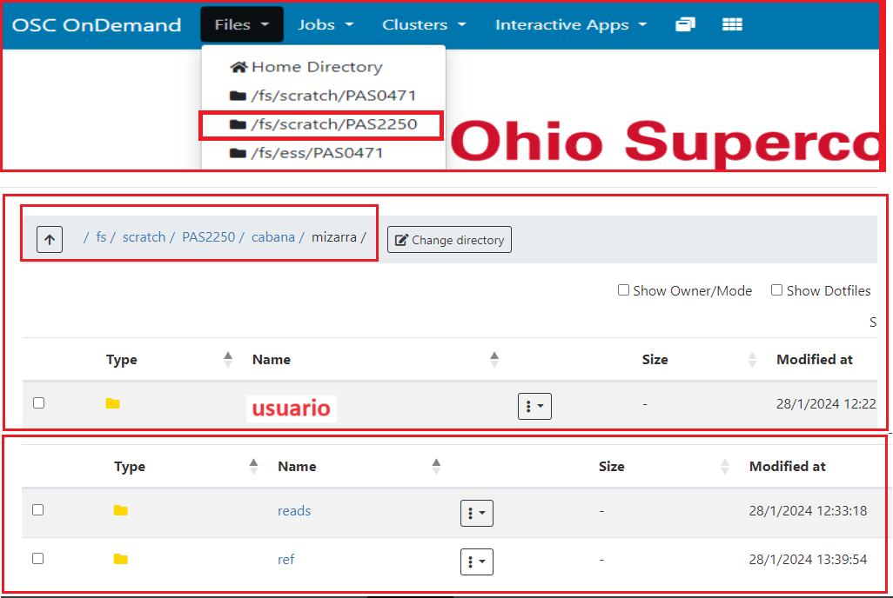
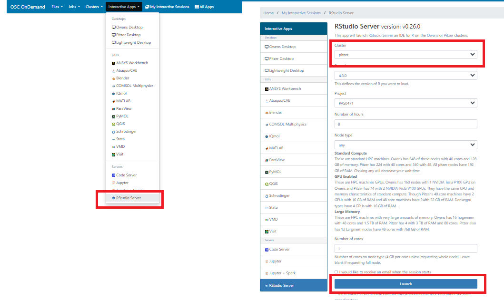
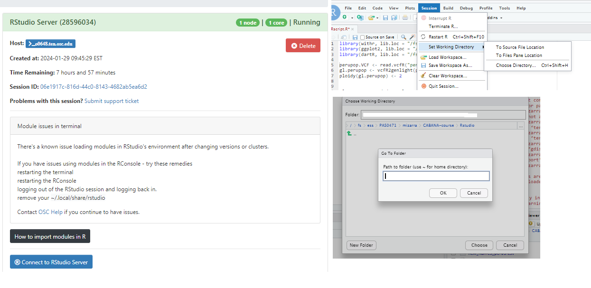

# Cargar modulos - <https://www.osc.edu/resources/available_software/software_list/r#import_modules>
source(file.path(Sys.getenv("LMOD_PKG"), "init/R")) module("load", "gdal/3.3.1") module("load", "proj/8.1.0") module("load", "geos/3.9.1") module("load", "sqlite/3.36.0")
# Cargar links de libreria dinamica dyn.load("/apps/proj/8.1.0/lib/libproj.so.22", local=FALSE)
dyn.load("/apps/gdal/3.3.1/lib/libgdal.so.29", local=FALSE) dyn.load("/apps/geos/3.9.1/lib/libgeos_c.so", local=FALSE)
# Definir y configurar el directorio de la libreria
libdir <- "/fs/ess/PAS0471/jelmer/R/peru"
.libPaths(libdir)
library(vcfR)
library(poppr)
library(ape)
library(adegenet)
library(RColorBrewer)
library(viridis)
library(ggplot2)
library(ggtree)
library(dartR)
library(directlabels)
library(viridisLite)Amplicon sequencing for Phytophthora infestans populations
Análisis de poblaciones de Phytophthora infestans
1 Data Secuenciada
Listado de muestras (n=55) a analizar por alumno.

2 Servidor
Ingresar SupercomputerCenter. Ingresar su usuario y contraseña:
2.1 Definiendo el directorio de trabajo
El primer paso es definir un directorio de trabajo. El directorio o carpeta de trabajo es aquel en que se va a buscar los archivos
2.1.1 Dar click en Files y escoger /fs/scratch/PAS2250/mizarra
2.1.2 Buscar su usuario y entrar al folder

2.1.3 Abrir VS Code
- You should already have a VS Code session, but if not, see the instructions below.
Starting VS Code at OSC - Instructions in brief (Click to expand)
- Log in to OSC’s OnDemand portal at https://ondemand.osc.edu.
- In the blue top bar, select
Interactive Appsand then near the bottom of the dropdown menu, clickCode Server. - In the form that appears on a new page:
- Select OSC project
PAS2250 - The starting directory:
/fs/scratch/PAS2250/ENT6703/<your_personal_dir> Number of hours:10- Click
Launch.
- Select OSC project
- On the next page, once the top bar of the box has turned green and says
Runnning, clickConnect to VS Code.
- Ingresar a su carpeta:
cd /fs/scratch/PAS2250/cabana/$USER2.2 Archivos Ingresar a cada carpeta del usuario según sus apellidos
- Reads:
ls ../mizarra/***usuario_nuevo***/reads- Contig de secuencia de referencia:
ls ../mizarra/***usuario_nuevo***/ref2.3 Copiar directorios (folders)
Para copiar directorios (folders) a una nueva ubicación en Linux, puedes usar el comando
cp(copy)Verificar que el nombre usuario_nuevo tenga el nombre de carpeta creada por ustedes en el OSC
Crear carpeta llamada Phytophthora en su carpeta nueva
mkdir Phytophthora2.3.1 Comando 1: Reads
cp -r ../mizarra/***usuario_nuevo***/reads Phytophthora/reads2.3.2 Comando 2: Referencia
cp -r ../mizarra/***usuario_nuevo***/ref Phytophthora/ref3 Softwares utilizados
bwa: Mapeo de secuencias de ADN contra el genoma de referencia.
samtools: Para manipular alineaciones en formato SAM.
bcftools: Para llamar variantes y manipular VCF y BCF.
4 Script a ser corrido
4.1 Cargar los softwares
module load miniconda3
source activate /fs/ess/PAS0471/jelmer/conda/cabana4.2 Ubicación en la carpeta de la referencia
cd Phytophthora/ref4.2.1 BWA index para crear un índice para un genoma de referencia
bwa index Pinf2021refs.fa4.2.2 Hacer un índice de archivo fasta del genoma de referencia
samtools faidx Pinf2021refs.fa4.3 Ubicación en la carpeta reads
cd ../reads4.3.1 Alineamiento a la referencia
for file in *.fq.gz; do
bwa mem ../ref/Pinf2021refs.fa "$file" > "${file/%fq.gz/sam}"
done4.3.2 Ordenar los alineamientos
for file in *.sam; do
samtools sort -o "${file/%sam/sorted.sam}" "$file"
done4.3.3 Convertir archivos SAM a BAM
for file in *sorted.sam; do
samtools view -bt ../ref/Pinf2021refs.fa.fai -o "${file/%sorted.sam/bam}" "$file"
done4.3.4 Remover archivos SAM
rm *.sam4.3.5 Copiar los archivos bam (n=25) a una carpeta en común
cp *.bam /fs/scratch/PAS2250/cabana/Phytophthora/reads4.3.6 Crear un listado de los archivos bam de todos los alumnos (n=25). Esperar que esten los 25 archivos bam.
- Ubicarnos en la carpeta que tiene todos los archivos bam
ls /fs/scratch/PAS2250/cabana/Phytophthora/reads*.bam > listbam4.3.7 Llamado de Variantes SNPs
- Ubicarnos en la carpeta que contiene el archivolistbamgenerado
bcftools mpileup -Ou -f ../ref/Pinf2021refs.fa -b listbam |
bcftools call -mv -o perupop.vcf4.3.8 Filtrar posiciones de SNP
bcftools filter -Ov -o perupop_filtered.vcf -s LOWQUAL -e 'QUAL\<10 \|\| DP \<10' \
--SnpGap 5 --set-GTs . perupop.vcf4.3.9 Mantener sólo los SNP con calidad chequeada
bcftools view -f PASS perupop_filtered.vcf > perupop_filtered_final.vcf5 Rstudio
5.1 Crear una carpeta llamada Rstudio
mkdir /fs/scratch/PAS2250/cabana/$USER/Rstudio5.2 Copiar el archivo *.vcf
cp perupop_filtered_final.vcf /fs/scratch/PAS2250/cabana/$USER/Rstudio5.3 Cargar Rstudio en el OSC OnDemand
Ingresar SupercomputerCenter
5.3.1 Seleccionar Rstudio Server
5.3.2 Iniciar Rstudio : cluster pitzer 5.3.3 “click en Launch” -setear número de horas
5.3.3 Seleccionar el directorio de trabajo: /fs/scratch/PAS2250/cabana/$USER/Rstudio


5.4 Cargar las librerias
# Cargar el archivo vcf generado con bcftools
perupop.VCF <- read.vcfR("perupop_filtered_final.vcf")# Convertir el conjunto de datos en un objeto genlight
gl.perupop <- vcfR2genlight(perupop.VCF)ploidy(gl.perupop) <- 2# Renombrar las muestras
#El archivo: new_names_peru.csv: Esta localizado aqui:
#*/fs/scratch/PAS2250/cabana/Phytophthora/new_names_peru.csv*
gl.perupop_recoded <- gl.recode.ind(gl.perupop,
ind.recode="new_names_peru.csv",
mono.rm = T, verbose=0)
gl.perupop_recoded#Asignar el linaje clonal de las muestras en el orden delos genotipos reportados
pop(gl.perupop_recoded) <- as.factor(c("US-1",
"US-1",
"PE-3",
"PE-3",
"PE-3",
"EC-1",
"EC-1",
"EC-1",
"EC-1",
"PE-7",
"PE-7",
"US-1",
"US-1",
"US-1",
"US-1",
"US-1",
"EC-1",
"EC-1",
"EC-1",
"EC-1",
"EC-1",
"EC-1",
"EC-1",
"PE-3",
"PE-7",
"PE-7",
"PE-7",
"PE-7",
"PE-7",
"PE-7",
"PE-3",
"PE-3",
"PE-3",
"PE-3",
"PE-3",
"PE-3",
"US-1",
"US-1",
"US-1",
"US-1",
"US-1",
"US-1",
"US-1",
"PE-7-Puno",
"PE-7-Puno",
"PE-7-Puno",
"PE-7-Puno",
"PE-7-Puno",
"PE-7-Puno",
"PE-7-Puno",
"PE-7-Puno",
"PE-7-Puno",
"PE-7-Puno",
"PE-7-Puno",
"PE-7-Puno"))5.5 Dendograma basado en el algoritmo UPGMA
#La función aboot se utiliza para evaluar la precisión del árbol de
#decisión ajustado mediante la validación cruzada bootstrap.
tree <- aboot(gl.perupop_recoded, tree = "upgma", distance = bitwise.dist,
sample = 100, showtree = F, cutoff = 50, quiet = T)
cols <- turbo(n = nPop(gl.perupop_recoded))
plot.phylo(tree, cex = 0.8, font = 2, adj = 0, tip.color = cols[pop(gl.perupop_recoded)])
nodelabels(tree$node.label, adj = c(1.3, -0.5), frame = "n", cex = 0.8,font = 3, xpd = TRUE)
legend('topleft', legend = c("EC-1","PE-3", "PE-7", "PE-7-Puno", "US-1"), fill = cols,
border = FALSE, bty = "n", cex = 0.55)
axis(side = 1)
title(xlab = "Genetic distance (proportion of loci that are different)")
dev.off()# Guardar el Gráfico
png("Tree_alldata.png", res = 300, width = 9.57, height = 9.34, units = 'in')
plot.phylo(tree, cex = 0.8, font = 2, adj = 0, tip.color = cols[pop(gl.perupop_recoded)])
nodelabels(tree$node.label, adj = c(1.3, -0.5), frame = "n", cex = 0.8,font = 3, xpd = TRUE)
legend('topleft', legend = c("EC-1","PE-3", "PE-7", "PE-7-Puno", "US-1"), fill = cols,
border = FALSE, bty = "n", cex = 0.55)
axis(side = 1)
title(xlab = "Genetic distance (proportion of loci that are different)")
dev.off()# Reporte de la calidad de la data
gl.report.callrate(gl.perupop_recoded, method ="loc")
gl.report.callrate(gl.perupop_recoded, method ="ind")# Filtrar la data 0.8189447
gl.perupop2 <- gl.filter.callrate(gl.perupop_recoded,
method="ind",
t=0.8189447,
recalc = T)names(gl.perupop2)
gl.perupop2$ind.names
gl.perupop2$poppop(gl.perupop2) <- as.factor(c("US-1",
"US-1",
"PE-3",
"EC-1",
"EC-1",
"PE-7",
"PE-7",
"US-1",
"US-1",
"US-1",
"US-1",
"EC-1",
"EC-1",
"PE-3",
"PE-7",
"PE-7",
"PE-7",
"PE-7",
"PE-7",
"PE-7",
"PE-3",
"PE-3",
"PE-3",
"PE-3",
"PE-3",
"US-1",
"US-1",
"US-1",
"US-1",
"PE-7-Puno",
"PE-7-Puno",
"PE-7-Puno",
"PE-7-Puno"
))# Árbol de distancia basado en el algoritmo UPGMA, con 100 replicados de bootstrap
tree2 <- aboot(gl.perupop2, tree = "upgma", distance = bitwise.dist,
sample = 100, showtree = F, cutoff = 50, quiet = T)
cols <- turbo(n = nPop(gl.perupop2))
plot.phylo(tree2, cex = 0.8, font = 2, adj = 0, tip.color = cols[pop(gl.perupop2)])
nodelabels(tree2$node.label, adj = c(1.3, -0.5), frame = "n", cex = 0.8,font = 3, xpd = TRUE)
legend('topleft', legend = c("EC-1","PE-3", "PE-7", "PE-7-Puno", "US-1"), fill = cols,
border = FALSE, bty = "n", cex = 0.65)
axis(side = 1)
title(xlab = "Genetic distance (proportion of loci that are different)")
dev.off()# Guardar el Gráfico
png("Tree_filter0.8189447.png", res = 300, width = 9.57, height = 9.34, units = 'in')
plot.phylo(tree2, cex = 0.8, font = 2, adj = 0, tip.color = cols[pop(gl.perupop2)])
nodelabels(tree2$node.label, adj = c(1.3, -0.5), frame = "n", cex = 0.8,font = 3, xpd = TRUE)
legend('topleft', legend = c("EC-1","PE-3", "PE-7", "PE-7-Puno", "US-1"), fill = cols,
border = FALSE, bty = "n", cex = 0.65)
axis(side = 1)
title(xlab = "Genetic distance (proportion of loci that are different)")
dev.off()5.6 Analisis de Coordenadas Principales (PCoA) usando la matriz de distancias
#
subset_phytoph <- gl.recalc.metrics(gl.perupop2)
subset_phytoph$other$loc.metrics <- as.data.frame(subset_phytoph$other$loc.metrics)
pcoa <- gl.pcoa(subset_phytoph, nfactors = 5)gl.pcoa.plot(pcoa, gl.perupop2)